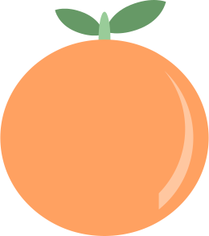

Site Name
 Visit Georgia -- We're Glad Georgia's On Your Mind.
My wife and I moved to Georgia 3 1/2 years ago and have really enjoyed our time here! I want others who are curious about Georgia to have a resource that can help them learn more about the state and plan a visit.
Site Purpose
This site will be a resource for people who want to visit or learn more about Georgia. I plan to include places to visit, things to do, food to try, and some of the history of the state.
Scenarios
Scenario 1: Where are some good places to visit in Georgia?
Scenario 2: What are some must-try foods when visiting Georgia?
Color Schema
Since part of this project is to convey enthusiasm about Georgia (and because Georgia is the Peach State) I chose a color scheme that has elements of a ripe peach. The header text color is #F8961E and the background color for the headers is #14481c (a dark green). Orange helps the user become enthusiastic, which is what I want them to feel when they think about visiting Georgia. The green color works well for travel websites since it gives the psychological impression of freshness, nature, relaxation, and sustainability.
Typography
I plan to use Georgia for paragraphs, Lobster for headings, and Afacad Flux for labels, special text, or emphasis.